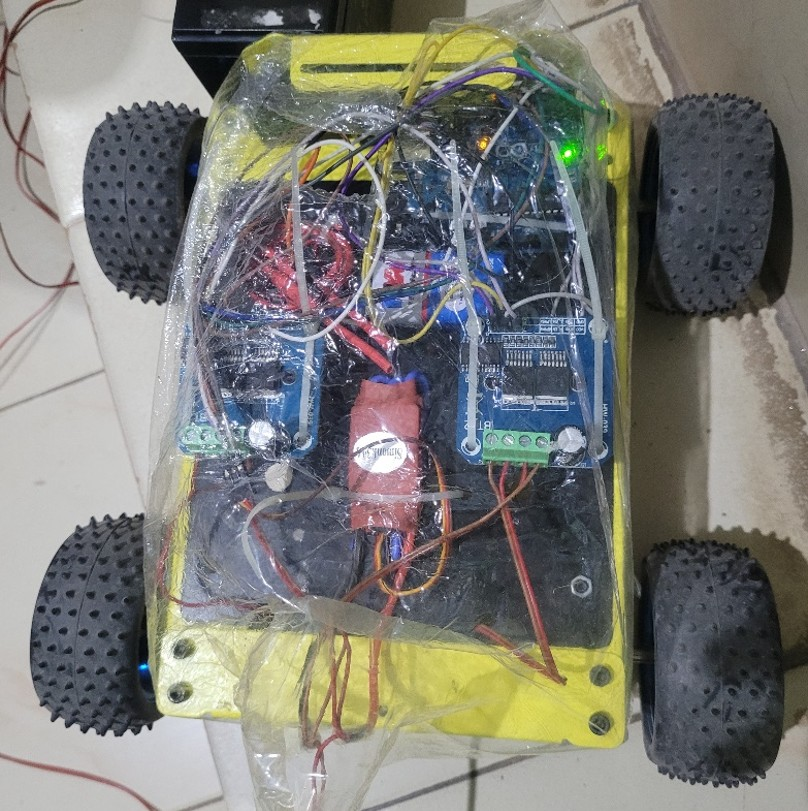
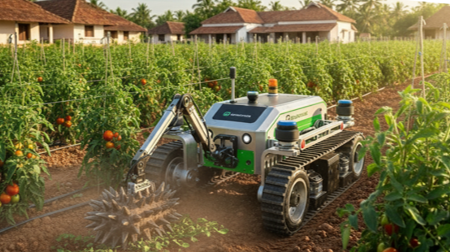

Smart Agri Rover 🌾
An intelligent agricultural rover for weed removal, disease detection, and smart farm automation — improving yield and reducing labor costs.
Project Overview
The Smart Agri Rover is designed to automate key agricultural operations such as weed detection, plant disease monitoring, and precision irrigation. Using AI-based computer vision and autonomous navigation, it empowers farmers to monitor crops efficiently and make data-driven decisions.
Highlights 🌟
- 🤖 AI Models: EfficientNet-B0 & MobileNetV3 for plant disease detection; YOLOv8n for weed identification.
- 🛰️ Navigation System: Combines GPS, LIDAR, Geo-fencing, and IMU sensors for precise autonomous movement.
- 💧 Smart Irrigation: Waters plants only when needed using real-time soil and environment data.
- 📱 Connectivity: Sends live farm updates and analytics to a mobile app dashboard.
- 🌱 Impact: Increases yield by 20–30%, reduces water and fertilizer use, and supports sustainable farming.
- 🔧 Prototype Level: Level 2 – Functional prototype under testing phase.
Project Gallery 📸



Code Repository 💻
View the complete source code for this project on GitHub:
Click to View